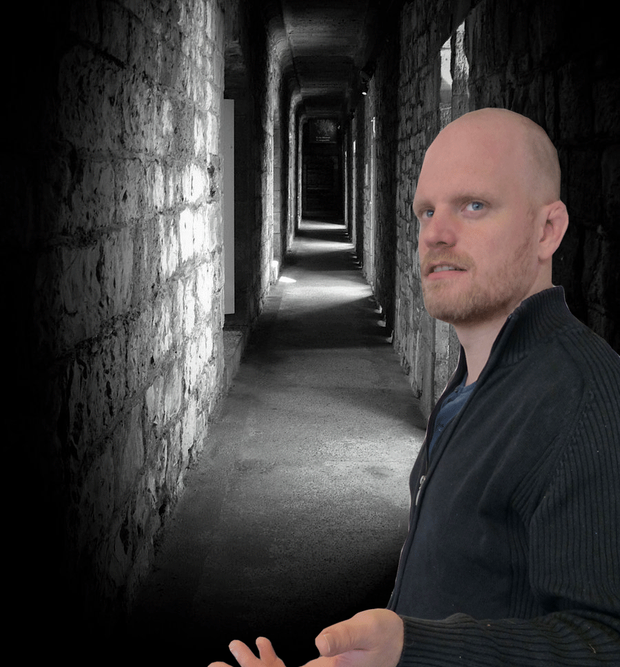

Feddman is weergekeerd, alhoewel, Feddman2. Je inherit de gegevens van de class Feddman waardoor Feddman2 eigenlijk gelijk staat aan de originele Feddman.
Feddman2 is trots op je en geeft je een schouderklopje. Hij suggereert om terug te gaan naar het Media kasteel.
